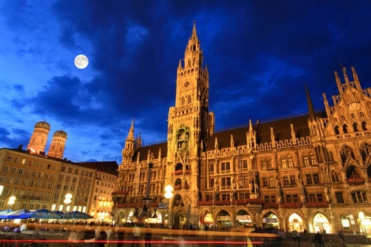
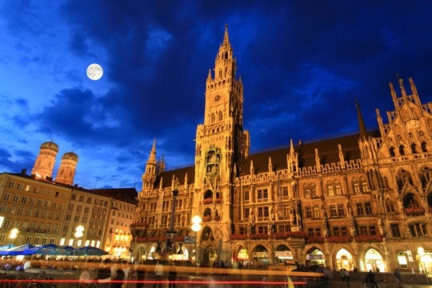
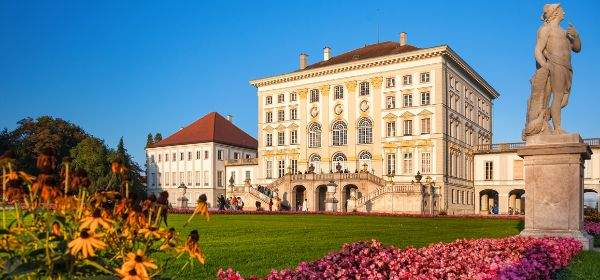
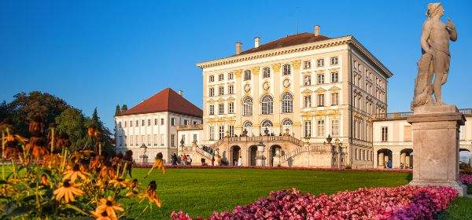
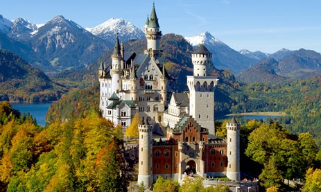
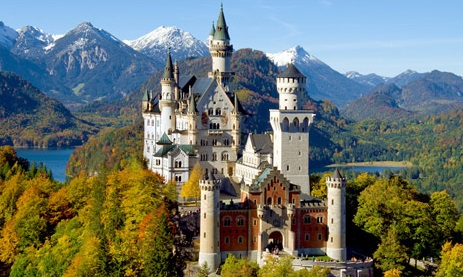

Munich
Welcome in Munich
The natural habitat of well-heeled power dressers and Lederhosen-clad thigh-slappers, Mediterranean-style street cafes and Mitteleuropa beer halls, highbrow art and high-tech industry, Germany’s unofficial southern capital is a flourishing success story that revels in its own contradictions. If you’re looking for Alpine clichés, they’re all here, but the Bavarian metropolis has many an unexpected card down its Dirndl.
But whatever else this city is, it’s popular. Statistics show Munich is enticing more visitors than ever, especially in summer and during Oktoberfest, when the entire planet seems to arrive to toast the town.
Munich’s walkable centre retains a small-town air but holds some world-class sights, especially art galleries and museums. Throw in royal Bavarian heritage, an entire suburb of Olympic legacy and a kitbag of dark tourism, and it's clear why southern Germany’s metropolis is such a favourite among those who seek out the past but like to hit the town once they’re done.
Top experiences
-
Residenzmuseum
Home to Bavaria's Wittelsbach rulers from 1508 until WWI, the Residenz is Munich's number one attraction. The amazing treasures, as well as all the trappings of their lifestyles over the centuries, are on display at the Residenzmuseum, which takes up around half of the palace. Allow at least two hours to see everything at a gallop.
-
Schloss Nymphenburg
This commanding palace and its lavish gardens sprawl around 5km northwest of the Altstadt. Begun in 1664 as a villa for Electress Adelaide of Savoy, the stately pile was extended over the next century to create the royal family's summer residence. Franz Duke of Bavaria, head of the once royal Wittelsbach family, still occupies an apartment here.
-
Münchner Stadtmuseum
Installed for the city's 850th birthday (2008), the Münchner Stadtmuseum's Typisch München (Typically Munich) exhibition – taking up the whole of a rambling building – tells Munich's story in an imaginative, uncluttered and engaging way. Exhibits in each section represent something quintessential about the city; a booklet/audioguide relates the tale behind them, thus condensing a long and tangled history into easily digestible themes.
-
Alte Pinakotheke
Munich's main repository of Old European Masters is crammed with all the major players that decorated canvases between the 14th and 18th centuries. This neoclassical temple was masterminded by Leo von Klenze and is a delicacy even if you can't tell your Rembrandt from your Rubens. The collection is world famous for its exceptional quality and depth, especially when it comes to German masters.
-
Pinakothek der Moderne
Germany's largest modern-art museum unites four significant collections under a single roof: 20th-century art, applied design from the 19th century to today, a graphics collection and an architecture museum. It's housed in a spectacular building by Stephan Braunfels, whose four-storey interior centres on a vast eye-like dome through which soft natural light filters throughout the blanched white galleries.
-
Bayerisches Nationalmuseum
Picture the classic 19th-century museum, a palatial neoclassical edifice overflowing with exotic treasure and thought-provoking works of art, a repository for a nation’s history, a grand purpose-built display case for royal trinkets, church baubles and state-owned rarities – this is the Bavarian National Museum, a good old-fashioned institution for no-nonsense museum lovers. As the collection fills 40 rooms over three floors, there’s a lot to get through here, so be prepared for at least two hours’ legwork.
-
Neue Pinakothek
The Neue Pinakothek harbours a well-respected collection of 19th- and early-20th-century paintings and sculpture, from rococo to Jugendstil (art nouveau). All the world-famous household names get wall space here, including crowd-pleasing French impressionists such as Monet, Cézanne and Degas as well as Van Gogh, whose boldly pigmented Sunflowers (1888) radiates cheer.
-
Olympiapark
The area to the north of the city where soldiers once paraded and the world's first Zeppelin landed in 1909 found a new role in the 1960s as the Olympiapark. Built for the 1972 Olympic Summer Games, it has quite a small-scale feel and some may be amazed that the games could once have been held at such a petite venue.
Discover the beauty of Munich
 


 


 
